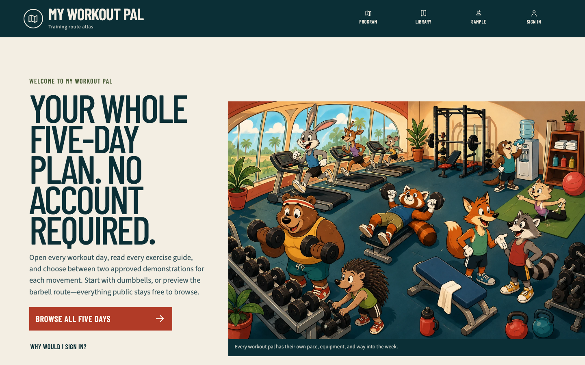
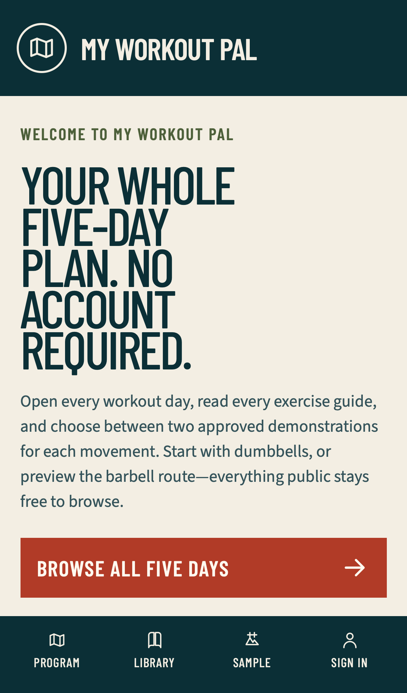

Guest landing and contextual navigation checkpoint
Outcome
The public root is now a genuine welcome page and /program remains the complete five-day explorer. Guests can inspect every starter day, canonical exercise guide, approved video pair, sample workout, and sample analytic without signing in. Account copy limits sign-in to customization, persistence, workout tracking, recovery, history, records, and personal analytics.
Exercise guides return to the exact recognized public source that opened them: the program overview, one of five days, a filtered library, or a supported sample workout. Invalid, repeated, private, authentication, absolute, control-containing, oversized, or unknown origins fall back to the public library.
Newest visual evidence
Desktop, 1440 by 900 CSS pixels:

Phone, iPhone 13 emulation at 390 by 664 CSS pixels:

The hero is one cohesive, fully hand-drawn cartoon gym populated by expressive animal characters. It has no people, hotspots, tiles, labels, copied character, or photographic layer. The exact image-generation prompt is retained beside the runtime WebP.
Personally observed local flow
Environment: local production build at http://127.0.0.1:3101, from an uncommitted guest-landing/navigation worktree based on exact pushed commit 838b518d983c6d2377cc29a2b0fd1c6cd02b8ca2. This checkpoint deliberately precedes its release commit; the deployed preview must identify and test the resulting immutable commit separately.
- Opened
/, confirmed the hero loaded from the explicit precached WebP, and entered/program. - Confirmed Push, Pull, Legs, Upper, and Lower are public in both equipment profiles.
- Opened Push, opened Dumbbell bench press, and used the visible Push day link to return to the exact dumbbell Push URL.
- Searched the barbell library for
bent over row, opened the exercise, and returned to the same equipment and search query. - Opened the Lower barbell sample workout, followed Technique, and returned through Lower sample workout to the same sample selection.
- Confirmed the exercise guide retained two approved demonstrations, title/channel attribution, direct fallback, and one privacy-enhanced iframe.
- Inspected desktop and phone layouts. The phone primary action clears the fixed navigation, the document has no horizontal overflow, and the desktop scene remains complete rather than cropped.
Deployed preview and production evidence
Feature commit 5a1815f4489f11e1485137ca480e81ae5f927fff deployed Ready as protected preview dpl_ANFGkZd82kPLanMuF1XNijHDWfez. GitHub reported the Vercel status successful. Authenticated vercel curl requests passed /, /program, dumbbell Push, repeated-q library, repeated-returnTo sign-in, and contextual Dumbbell bench press routes with the expected landing, Firebase-session, back-link, approved-pair, and privacy-enhanced iframe markers. The in-app browser reached Vercel's protection login rather than the application, so this is protected-preview server evidence, not a false claim of interactive preview access. The bounded one-hour error-log query returned no entry.
The byte-identical release tree merged to main as 6f62e1e22fbaaabaa86a613992445d04cfffa310 and deployed Ready as production dpl_CkVVS1K2yDJYXUmnZgxLRxV37yZZ at https://my-workout-pal-chi.vercel.app. GitHub reported the deployment successful. A real in-app production browser then:
- Loaded the distinct welcome page, complete cartoon scene, explicit public/account boundary, and all five direct day links.
- Exercised the visible PWA update notice and returned to the current welcome page with the notice cleared.
- Navigated welcome → program → dumbbell Push → Dumbbell bench press, selected Demo 2, retained exactly one iframe, and returned through the visible Push day link to the exact equipment URL.
- Opened repeated library
qvalues and observed an unfiltered library rather than a route interruption; opened repeated sign-inreturnTovalues and observed the real Firebase session surface rather than an application error. - At 390 by 664 CSS pixels, measured the primary-action bottom at 572.92 and fixed navigation top at 590.41, selected the 768-pixel WebP, found zero preload links and zero horizontal overflow, and captured no console warning or error.
- At 820 by 1180 CSS pixels, confirmed the scene begins exactly after the welcome copy, with zero horizontal overflow and no console warning or error.
The final production error-log query returned no entry. The stored screenshots above come from the same reviewed runtime tree's bounded local production build; the in-app production browser supplied DOM, geometry, player, URL, and console evidence but did not return a screenshot artifact.
Retained red-to-green evidence
- The public-return suite first failed because its domain module did not exist, then passed after the bounded parser and URL builder were implemented.
- A sample-workout origin case first failed, then passed after the fourth public context was explicitly supported.
- The PWA policy first failed because the hero was not an explicit public asset, then passed after the cache version and generated worker changed.
- Two public-shell tests first failed because shared links allowed speculative RSC prefetch. The corrected shells pass and the WebKit console remains clean.
- A landing-markup assertion first failed because rendered HTML referenced an uncached Next image-optimization URL. The hero now uses the exact source URL that the service worker precaches.
- The initial phone geometry assertion measured the CTA bottom at 615.95 CSS pixels against navigation beginning at 590.41. After the small-screen rhythm correction, the focused Chromium phone case and newest screenshot pass.
- Independent hostile-query replay exposed route interruptions for repeated library
qand sign-inreturnTovalues. The two retained unit failures passed after both public boundaries accepted arrays at the type edge and failed closed before string normalization. - A landing assertion retained the full-size phone preload and missing compact source. It passed after adding an explicit 768-pixel cached derivative, responsive
srcSet/sizes, and removing high-priority preload signaling.
Automated verification
pnpm typecheck: pass.pnpm lint: pass.- Permission-correct
pnpm test: 77 files and 514 tests pass. pnpm build: Next.js 16.3.2 Webpack production build passes.pnpm pwa:check: generated service worker matches policy.pnpm docs:check: 30 Markdown/HTML pairs pass, including this report and its generated counterpart.- Image prompt scan: 2 responsive raster variants, 0 missing sidecars.
PLAYWRIGHT_BASE_URL=http://127.0.0.1:3101 pnpm exec playwright test tests/e2e/public-release.spec.ts --reporter=line: 40 of 40 pass across Chromium phone, Chromium tablet, Chromium desktop, and WebKit phone.- Eight public surfaces per browser project have no serious or critical Axe violation; the exercise page separately verifies its titled cross-origin YouTube iframe boundary.
- Bounded Chromium phone inspection selected
/illustrations/workout-pals-gym-768.webp, found zero hero preload links, and captured zero console messages.
Evidence boundary
This checkpoint proves the guest landing and navigation slice in a local production build, the exact protected preview through authenticated server responses, and the public production alias through a real interactive browser. It does not prove a protection-authenticated interactive replay of this exact preview, nor the still-open Google, recovery, expiry/revocation, cross-user, full authenticated-program, interruption, production live-playback-indicator, or Spend Management lanes.